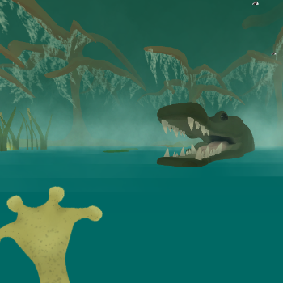
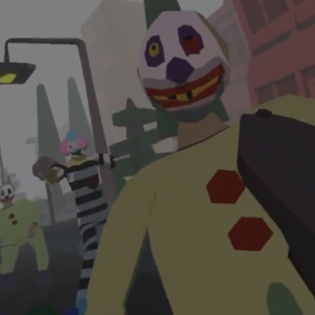
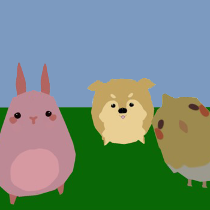
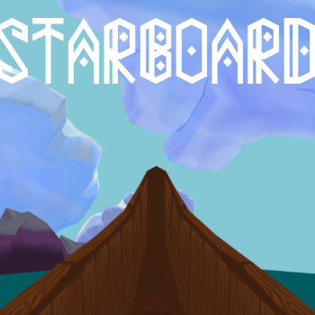
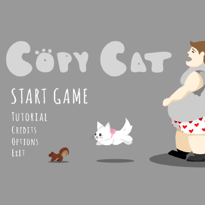

World Tour Z is a VR exercise game that progresses through a zombie clown infested apocalypse by means of a stationary bike. The game registers how fast a player pedals and the bike in game will speed up or slow down accordingly. The game uses a Vive controller attached to a players foot and second control that equips players with a .45 that they can use to take care of pesky undead clowns. Each clip only has 10 rounds, so a player must reach to their side to reload. Players can also look down at their bike screen to keep up with their stats. This game was created in 36 hours."/>
Stickygrams is a Augmented Reality app created for the HoloLens. Stickygrams allows a user to leave holographic messages to their friends and the public. Using voice controls a user logs into their account, pulls up a menu, picks a hologram, and creates a voice message that will be replaced by text above their hologram."/>
Starboard is an immersive sailing adventure game made for the HTC Vive and Oculus Rift. It was made in 48 hours."/>
Copy Cat is a single player mobile game made for Athens Game Jam. This game was made in 36 hours. "/>
×